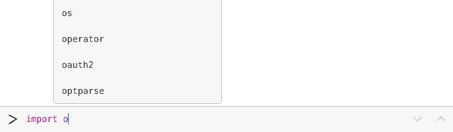
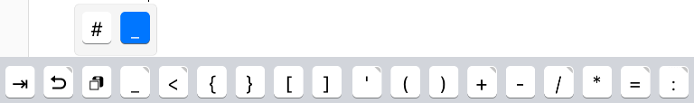

Navigation
- index
- modules |

- Python »
- 3.6.1 Documentation »
- |
This page provides an overview of Pythonista’s user interface, and also contains some useful tips and tricks to help you get the most out of it.
Pythonista is divided into three panels: The script library, the code editor, and the interactive prompt, which also contains the documentation viewer. You can switch between these panels with left and right swipe gestures.
The script library shows all the scripts you’ve written and those that are included
as examples. You can either view them as a list of file names, or as code snippet previews.
The view mode can be changed by tapping the ... button.
To create a new script, tap the + button at the bottom of the file browser.
This will open the template picker to select the type of file, and its name.
To delete scripts, or move them to a different folder, tap the Edit button or use drag’n’drop. Deleted scripts are moved to the special Trash folder, from where you can restore or delete them forever.
The script library also shows non-Python files, e.g. data files that your scripts create or work with. For many file types, a preview can be shown, and you can also open them in a different app on your device.
Tips:
The interactive prompt is the easiest way to get started with Python. Every time you enter a line of code, it is executed immediately, so you get quick feedback and can experiment with the syntax. Even if you know (almost) nothing about Python, you’ll be able to use the prompt as a powerful calculator.
You can get to the prompt at any time with a left swipe gesture. This area is also used for text output of any scripts that you run, and for keyboard input.
When you enter code, completions are suggested automatically.
The console’s output area can also show images, e.g. when using the PIL
(Python Imaging Library) module, or matplotlib.
Tips:
console module allows you to modify the console’s output font, colors, and to clear the text output programmatically.^ button to clear the console’s history.(i) button in the top-righthand corner toggles the Object Inspector. It allows you to inspect variables and their attributes visually, by browsing the object hierarchy tree. The inspector can also preview certain types of images.If you’ve used any programming editor before, you’ll probably feel right at home in Pythonista. For the most part, the editor behaves very similar to any other text area on iOS, but there are some additional features that might not be obvious at first.
First off, the keyboard contains additional keys with special characters that are useful for programming. These additional keys also work as a gesture area: You can slide across them with your finger to move the cursor, which makes it easier to position it precisely.
For navigating in complex scripts, you can tap the name of the script at the top of the screen, to get a popup of all functions, classes, and methods. You can also rename files from this popup.
When you use the scene, ui or sound modules, you can insert names
of built-in images, sound effects, and colors using the [+] button at the top.
One very powerful feature of the editor is that it is programmable itself.
You can use the editor module for replacing text, positioning the
cursor, etc. You can then add your own scripts to the action (“wrench”) menu,
so that you can run them directly from the editor when working on your code.
Tap the Edit button in the editor actions menu to add your own scripts.
Have a look at the documentation about the editor
module for some interesting examples.
Tips:
'#ff00ff') can be edited using a visual color picker. Simply put the cursor on the color value to show a color swatch, tap it to adjust the color.(+) button in the bottom-righthand corner (while editing) to insert colors, image, font or sound effect names. This is mostly meant for use with the ui, scene, and :mod:`PIL`(low) modules, but may also be helpful for web development.If you have an external (e.g. Bluetooth) keyboard connected to your iOS device, you can navigate almost all of Pythonista using keyboard shortcuts.
Press and hold the Cmd (⌘) key at any time to show a list of available shortcuts. Some shortcuts are only available in certain modes, e.g. while editing code or in the console.
Tip
In most lists, Pythonista supports navigation using the arrow keys, e.g. when you press Cmd+L to show the script’s outline, you can jump to a function using the up/down keys, confirming the selection with enter.
Common keyboard shortcuts (these work in all text areas on iOS):
Some of Pythonista’s keyboard shortcuts:
Pythonista contains various app extensions to integrate with other apps and parts of iOS.
You can use the sharing extension for running scripts in any app that uses the standard system share sheet. The custom keyboard extension allows you to run scripts in any app with text input. Pythonista URLs can be used to automate launching scripts from other apps (e.g. the Shortcuts app).
Learn more: App Extensions and Shortcuts
{kind=link}
{kind=link}
{kind=link}
{kind=link}